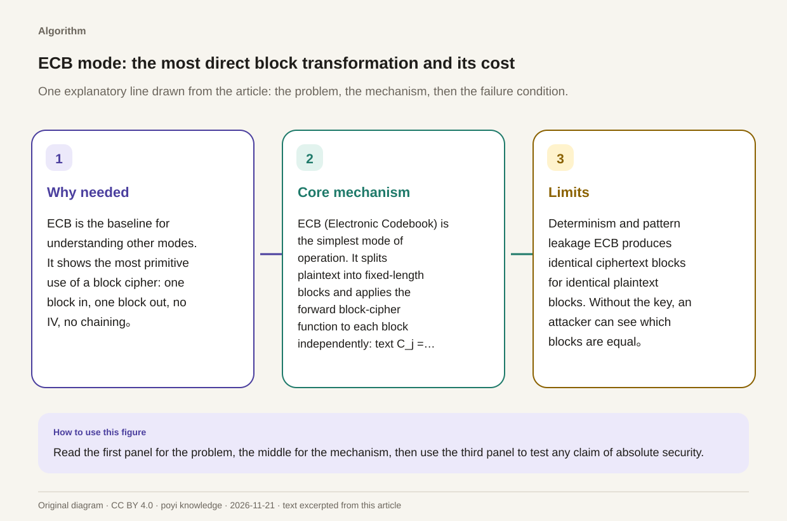
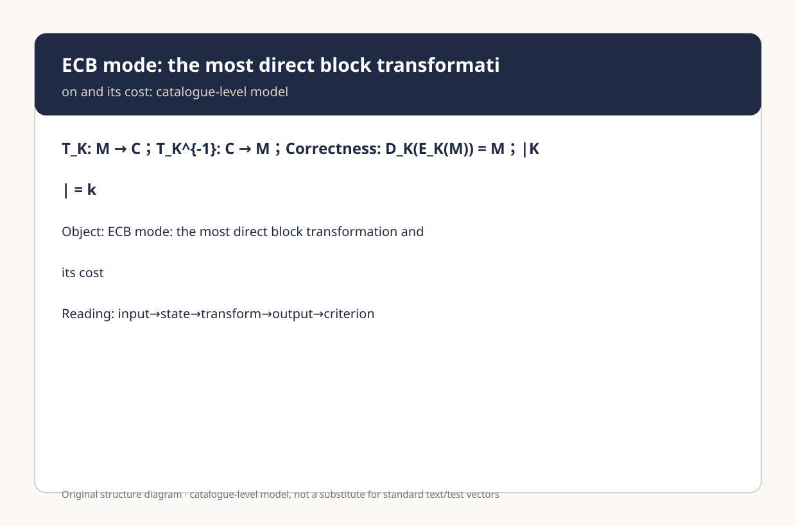

Principles
Algorithm: Electronic Codebook (ECB 电子密码本模式). ECB (Electronic Codebook) is the simplest mode of operation. It splits plaintext into fixed-length blocks and applies the forward block-cipher function to each block independently:
C_j = E_K(P_j)
Decryption is equally independent:
P_j = D_K(C_j)
ECB uses no IV and has no chaining between blocks. Encrypting or decrypting a block depends only on the key and that block, so blocks can be processed in parallel and accessed individually. ECB requires a complete sequence of blocks. SP 800-38A specifies that the ECB plaintext length must be a multiple of the block size; how to pad a shorter input is an application or protocol choice. This article's teaching implementation uses CMS PKCS#7 padding: append 1 to block-size bytes, each with value equal to the number of bytes added. ECB does not change the underlying block size or key length. It simply applies the same E_K or D_K independently to every block.

Why it matters
ECB is the baseline for understanding other modes. It shows the most primitive use of a block cipher: one block in, one block out, no IV, no chaining, no state. Most other modes exist to solve the problems ECB exposes.
ECB's problem is equally basic: under one key, identical plaintext blocks always produce identical ciphertext blocks. For images, database records, repeated fields or any structured data, an attacker can see repetition directly. SP 800-38A states explicitly that if this property is undesirable in an application, ECB should not be used.
ECB is therefore a teaching starting point and a reference for single-block transformation, not a general-purpose mode for multi-block data in new systems. Understanding ECB's cost matters more than memorizing that ECB is insecure.
Applications
ECB was the first mode FIPS 81 defined for DES in 1980, and later one of the five modes SP 800-38A generalized to block ciphers. Its historical role comes from applying a block cipher directly to data, not from protecting multi-block structure.
In a single-block setting with no repetition, or when the format itself is not sensitive, ECB's determinism may not leak extra structure. Real data often contains repetition and structure, so a safe single-block example does not generalize to safe multi-block use.
Modern systems that need multi-block confidentiality usually choose a mode with an IV or an AEAD; whether ECB is still acceptable must be decided from the protocol and data shape, not from the underlying cipher being AES.

Limits & attacks
ECB produces identical ciphertext blocks for identical plaintext blocks. Without the key, an attacker can see which blocks are equal, which repeat and whether the data has fixed structure. For images this preserves outlines; for databases it leaks repeated fields; for protocol records it leaks repeated headers or fixed fields.
ECB has no IV, so it has no predictable-IV or IV-reuse problem; but it also provides no positional confusion. Block order and boundaries remain visible, and deleting, reordering or duplicating ciphertext blocks maps directly to plaintext blocks.
ECB provides confidentiality only, not integrity. Modifying a ciphertext block modifies the corresponding plaintext block, and an attacker can make controlled substitutions; ECB cannot detect them. When integrity is needed, use AEAD or add a MAC.
ECB does not change the underlying block size. With a 64-bit block cipher, large block counts remain subject to the birthday bound; a 128-bit block pushes that boundary farther away. ECB's determinism problem is independent of block size; switching to AES does not remove repeated-block leakage.
ECB requires complete blocks; the padding rule and padding-error handling belong to the protocol layer. Padding provides no integrity and does not stop identical plaintext blocks from producing identical ciphertext blocks.
This article's teaching implementation demonstrates only the AES-128-ECB formula, official vectors, repeated blocks and independent-block properties on fixed data. It does not implement secure padding checks, key management, protocol state machines or side-channel defenses, and it must not be used in production.
History
In 1980, FIPS 81 defined ECB for DES. It was one of the earliest standardized ways to use a block cipher on more than one block. In 2001, SP 800-38A generalized ECB to block ciphers and supplied AES test vectors.
ECB's long use also made it the classic counterexample: a correct algorithm with the wrong mode still leaks data structure. CBC, CFB, OFB, CTR and AEAD each respond in different ways to ECB's determinism.
This history shows that ECB is not a wrong algorithm but a mode with a very narrow boundary: it suits settings that do not need to hide block relationships; using it for structured multi-block data turns a mode property into a system security failure.
Worked example & verification
Worked example
Take one published or standard test vector, record the input, the ordered steps and the byte-exact output, then compare with an independent implementation. Where no citable numeric vector is available, the entry records only structural steps and does not invent an output.
References
- Wikipedia search entry for ECB 电子密码本模式. https://zh.wikipedia.org/w/index.php?search=ECB%20%E7%94%B5%E5%AD%90%E5%AF%86%E7%A0%81%E6%9C%AC%E6%A8%A1%E5%BC%8F
- Handbook of Applied Cryptography (Menezes, van Oorschot, Vanstone). https://www.cacr.math.uwaterloo.ca/hac/